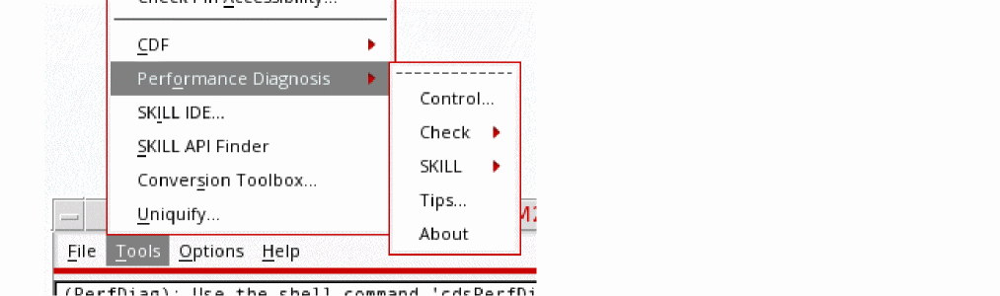

D
Diagnostics
This chapter covers the following sections related to diagnostic testing and analysis:
Reporting Application Crashes
In Virtuoso, a report will be generated on application failure or crash. This crash detector report automatically records an abridged version of crash data, including command logs and stack traces (for example, SKILL calls are included in the stack trace to assist crash investigations).
This information may subsequently assist in the debugging of critical software problems and also provide a means of tracking essential data which can be useful when attempting to identify key failure trends across specific applications (as well as Virtuoso itself).
When an incorrect termination of an application occurs, a Fatal Application Error dialog is displayed alerting you of this fact. The data is collected and made available in report format, in an ASCII text file, that includes a range of basic environment information. From the Fatal Application Error dialog you can chose to view the crash report that has been generated (View Report) or to Close the dialog.
Figure D-1 A Fatal Application Error Has Occurred
Note:-
Before closing the Fatal Application Error dialog, specify the nature of the Virtuoso crash, as this will assist Cadence in its software crash investigations. In addition to the Crash Report, the option you select is also stored in
STARTINFO_FILE.-
Select Virtuoso unexpectedly crashed if the software terminated unexpectedly without manual intervention.
If this option is selected, the following will be added to the Crash Report window:signal:Abort(6) ****PROCESS CRASHED****
-
Select Virtuoso killed due to hang or slowness if you manually terminated the software due to poor responsiveness.
If this option is selected, the following will be added to the Crash Report window:signal:Abort(6) ****PROCESS KILLED DUE TO SLOWNESS****
-
Select Virtuoso killed (non-bug) if you manually terminated the software for a reason other than poor responsiveness.
If this option is selected, the following will be added to the Crash Report window:signal:Abort(6) ****PROCESS KILLED BY USER****
-
If you do not select a crash reason option before selecting the Close or View Report buttons, the following will be added to the Crash Report window:
signal:Abort(6)
-
Select Virtuoso unexpectedly crashed if the software terminated unexpectedly without manual intervention.
-
If a
SEGFAULThappens (again) inside thevirtuosocrash hooks, the signal will be delivered directly to, and processed by, the crash report. -
If
virtuosois being run in nograph mode, the Fatal Application Error window will not be displayed. Rather, crash report information will be sent to thestderrlog. -
It is requested that you check the Application was killed by user... option if that was the case, as establishing if
virtuosowas killed intentionally will focus attention on genuine software crashes.
If you chose View Report, the Crash Report window is displayed:
Figure D-2 A Generated Crash Report
- From here, you can choose to save the contents of the report to a text file (File – Save As) for re-use, or select File – Close to exit the report after viewing.
- Additionally, within the File menu, you can choose to Copy report text, Select All report text, or Find particular report information using the Find text form.
- You can also use the View menu to choose what categories of crash information that you want to display in the crash report. For example, you can choose to show or hide information on Stacktrace, Debug, and/or cdsinit.
-
The crash report information is also appended to the
CDS.logfile. You can, for example, then refer to this log file for details on where the report file can be located.On crash, a copy of theCDS.logfile will be saved to the crash report directory, and renamed<crashReportName>/CDS.log. See also SAVELOGS=ONCRASH in the Customizing Crash Reports section. TheCDS.logfile will additionally save the date and time of crash. Also, in case Virtuoso crashed because of an external signal, the signal name will also be saved in the CDS.log file. In the earlier releases, the date and time of crash and the signal name were only saved in the crash reports. -
Relatedly, the crash report also lists the last ten errors, warnings, and commands listed in the
CDS.logfile. These crash report lines (that is, those referring tocmd:,warning:, anderror:lines) are listed with their relevantCDS.logline number to aid log investigations.
Figure D-3 Selecting Report Information to View
Customizing Crash Reports
The following name-value pairs can be set for the CDS_ERRORLOG environment variable to customize crash report behavior.
You only need to specify a value if you want to override the default.
setenv CDS_ERRORLOG "SAVELOGS=ONCRASH EXTENDED=TRUE ALWAYS=NO STARTINFO_FILE=/home/genel/startTimes_`date +%b%Y` DIR=/home/genel/crashes NAME_FMT=crashReport_%DATE_%TIME_%SUBVERSION_%USER_%HOST.log USE_DEBUGGER=YES DISABLED=NO LOG_EMAIL=virtuoso:nicolay@cadence.com,xyz@customer.com,viva:pqr@cad.customer2.com,hello@world.com"
Older versions of debuggers, such as GDB, may not correctly handle code that has been built using gcc4.4. This can result in incomplete stack traces being generated. It is therefore recommended that $PATH be set to the latest version of GDB or DBX, for example.If there is no debugger in the path, then no debug data will be included in the crash report.
The crash detector debugger can also be used to check the $DEBUGGER variable, and, if it is defined, it can attach it to the current process (even if USE_DEBUGGER has not been set). For example:
setenv DEBUGGER /opt/gdb/6.8/bin/gdb (where the latest version of GDB is specified)
In case of application crash, the crash detector also checks for the sender of the kill signal. If the signal is sent by any user, then the crash detector is triggered only when the following variable is set:
$CDS_ERRORLOG="ALL_ERRORS=YES"
Also, in the CDS.log file, one of the following statements get appended:
-
Process was terminated by USER with #### signal
When the process is terminated by the user -
Process was terminated with #### signal
When the process is terminated by the system
You can run cdsLibDebug and cdsinfo commands to add more information in the generated crash report.
The cdsLibDebug command enables you to get a list of cds.lib files and library definitions. In addition, it enables you to find syntax errors in cds.lib files.
Whereas, the cdsinfo command provides detailed information on design libraries, such as DMTYPE or NAMESPACE. The DMTYPE library is used with design management system and NAMESPACE is used with CDBA or OA.
Crash Trend Reporting
You can track session start and end data using the name-value pair STARTINFO_FILE with the CDS_ERRORLOG environment variable (see Customizing Crash Reports).
After application exit, whether as a result of a crash or normal exit, a range of system data can be collected. This information can then be analyzed to measure trends, for example, in the number of session starts against the number of system crashes.
If the name-value pair STARTINFO_FILE is set to point to a writable file, each Virtuoso session will be logged.
/tmp/startinfo_07_2009. You can set the file name to automatically change using the following: setenv CDS_ERRORLOG "STARTINFO_FILE=/home/jsmith/startTimes_`date +%b%Y`".
This log will include details of the program version, process ID, username, start/end dates and also times, or, in the case of a crash, the start/crash date and time will be recorded. Details of the process ID and crash report file name are also included. This can be either an absolute file path or the filename (which can be created and updated using the name-value pair DIR (see Saving Crash Report Data) or /tmp).
[ 7555@mymachine@jsmith ] start date/time:Sat Mar 21 06:37:57 2012 virtuoso ICADV12.1.155 plat:sun4v
crash report file :: /tmp crashReport_032109_0638_ICADV12.1.155_jsmith_mymachine.log
STARTINFO_FILE contains the name of the “startinfo file” under CDS_ERRORLOG (or under /tmp if DIR is not set). The “startinfo file” is created automatically if it does not exist, or it can point to an existing file.
kill -9 command, the STARTINFO_FILE will not record the exit/crash.kill -s USR1 <pid>Availability of Signal Description Information for Crashes
The crash detector report also displays the termination signal name and number, for example “signal:Hangup(1)”. This provides additional information on the type of crash that has occurred, such as internal application errors recorded as, for example, “#11 (segFault)” or “#4 (illegal instruction)” .Alternatively, it can inform if the software has likely been killed by the user, for example “#15 (sigterm)” and “#6 (sigabort)”.
If a signal description is therefore available, to describe the type of crash, the STARTINFO_FILE will display it as follows:
[7555@mymachine@jsmith] 11(SegFault):Wed Jul 8 13:16:03 2012 virtuoso ICADV12.1.2.404 lnx86
It should be noted however that signal numbers and descriptions may vary from platform to platform.
Storing User Feedback on Crashes
When a Virtuoso session crashes, the Fatal Application Error dialog appears. In this dialog, you can specify the nature of the Virtuoso crash. This information is stored in the crash report and by STARTINFO_FILE.
For example, if you select the option Virtuoso unexpectedly crashed, STARTINFO_FILE stores this information in the following format.
[7555@mymachine@jsmith] crash(Aborted):Fri Aug 12 15:52:08 2011 Virtuoso ICADV12.1.6-64b.DEL.173 lnx86 ****PROCESS CRASHED****
Crash Due to X Server Error
If a crash occurs due to a X Server error, the startinfo file will use the term “xkill” to distinguish this type of crash (rather than “crash”). For example:
[ 7555@mymachine@jsmith ] xkill date/time:Sat Apr 21 06:42:46 2012 virtuoso ICADV12.1.4.375 plat:sun4v
Crash Detector Display Check
The crash detector also performs a response check of XtOpenDisplay()on the machine being used for software display, recording the setting at the time of crash.
If this check establishes that XtOpenDisplay() is not responding, it will return NULL, and output that information into the X server section of the crash report. For example, (xserver: (Not Responding)).
Standard Virtuoso Exit
If Virtuoso exits as expected, that is it has not terminated as the result of a crash or X Server error, the following information format will be displayed in the STARTINFO_FILE:
[7555@mymachine@jmisth] exit(111):Thu Jun 11 12:35:43 2012 virtuoso ICADV12.1.4.387 sun4v
Reporting Additional Crash Data
If you require additional crash data to be collected you can set the EXTENDED name-value pair for the CDS_ERRORLOG environment variable (see Customizing Crash Reports) to be TRUE.
If EXTENDED is activated, the crash report will also record details of your environment variable settings and the content of the .cdsinit/cdsenv files.
-
Where for
.cdsinit, the content of the.cdsinitfile will be included in the crash data. -
Where for
.cdsenv, the name/value of those cds environment variables that differ from their default values will be included in the crash data.
It will also report checkSysConf and xdpyinfo information.
-
Where for
checkSysConf, the results of checks on the necessary pre-requisites to run Cadence software on the machine that the crash took place will be reported. -
Where for
xdpyinfo, the results of checks on the available graphics display visuals will be reported.
Saving Crash Report Data
Crash reports are saved into the directory specified by the DIR name-value pair using the CDS_ERRORLOG environment variable (see also Customizing Crash Reports). If DIR has not been specified, the directory name is generated by cdsGetTmpDir().
Each crash report has the default format name:
“crashReport_<DATE>_<TIME>_<SUBVERSION>_<USER>_<HOST>.log”
This can however be customized by setting the NAME_FMT name-value pair which defines the generated report name. The following keywords are used to achieve this:
%DATE = this is substituted by the current date%TIME = this is the current time%VERSION = this is the application version%SUBVERSION = this is the application subversion%PID = this is the process ID%USER = this is the user name%HOST = this is the host name
CDS_ERRORLOG=’NAME_FMT=crashReport_%DATE_%PID_%SUBVERSION_%USER_%HOST.log’
could generate a report name of:
/opt/reports/crashReport_180709_1014_ICADV12.1.4.302_jsmith_msc080.log
setenv CDS_ERRORLOG ’DIR=/home/jsmith/errorlog_dir’
setenv CDS_ERRORLOG ’DIR=../<dir_name>/errorlog_dir’
There might be instances where several crash reports are generated at the same time and the timestamp is same in all these report. In such a scenario, the newly-generated crash report name is appended by a unique identifier. For example, <generated-crash-report-name>_1.log, <generated-crash-report-name>_2.log ... <generated-crash-report-name>_N.log, to avoid overwriting existing reports.
Measuring Graphics Performance
Graphical performance measurements, which can be used to evaluate the ability of a platform to run the various graphics operations required by Virtuoso applications, can be accessed by running the hiGraphicsBenchmark standalone application from a shell terminal. This application is located in /tools/dfII/bin in your virtuoso installation.
Running hiGraphicsBenchmark displays the Virtuoso Graphics Performance Benchmarks window (see
Using graphic performance measurements can provide a number of benefits, including:
-
Establishing whether your current system can comfortably run
virtuoso - Tracking a change in performance following any system updates, such as installing a new driver
- Locating bottlenecks or issues which can then allow for more accurate system remedies to be provided
-
Providing suggestions, hints, and settable options that you can use to improve graphics performance with
virtuoso(see the Calibrator)
Running Virtuoso Graphics Performance Benchmarks
-
Run
hiGraphicsBenchmarkfrom a shell terminal. - In the displayed Graphics Performance Benchmarks window, select the benchmark tests that you want to perform.
-
Click the Run button, or choose File – Run Selected Benchmarks to begin testing.
Results are displayed in the Benchmark’s Results Window. -
Optionally, run the Calibrator (graphics measurement test tool) by clicking the Run button, or by choosing Tools – Calibrator.You can run the Calibrator on a set of pre-selected benchmarks. The results of calibration are displayed as suggested improvements in the Calibration and Suggestion Window.
- Optionally, open the Task Viewer to view the system processes that are currently running and the current levels of CPU memory usage.
hiGraphicsBenchmark Command-Line Arguments
The following command-line arguments can be used with hiGraphicsBenchmark:
Graphics Performance Benchmarks Window
The Graphics Performance Benchmarks window is displayed when you run the hiGraphicsBenchmark command from a shell terminal.
Figure D-4 The Virtuoso Graphics Performance Benchmarks Window
The Virtuoso Graphics Performance Benchmarks window comprises the following elements:
| Option | Description |
|---|---|
|
|
Choose Run Selected Benchmark to run the benchmark tests that are currently selected in the Benchmarks table. This is equivalent to using the Run button. Choose View Saved Results to access the Open form from where you can open and view previously saved results. Choose Close to exit the Graphics Performance Benchmarks window. |
|
|
Choose the appropriate command to open the |
|
|
|
|
Displays information about all the available graphics performance tests (Name column) that can be run. Select the check box corresponding to a test if you want to run that test.
Tests are grouped into specific testing areas, such as REDRAW ON WINDOW, AREA COPY, and IMAGE OPERATION. For more information on these tests, along with a description of each, see A Weight and Description can also be provided for each benchmark test. To edit the weight (importance) to be applied to a test, double-click the value in the Weight column and type the new value, or use the up and down arrows. |
|
|
Runs the selected tests (displaying the The Run button becomes available only if one or more specific benchmark tests are selected in the Benchmarks Table.
After testing starts, the Run button changes to a Stop button to enable you to interrupt the testing, if required.
Test results are displayed in the |
|
Performing Benchmark Tests
There are two methods that can be used to perform benchmark tests.
- To run the benchmark tests that are currently selected in the Graphics Performance Benchmarks window, click the Run button, or choose File – Run Selected Benchmarks. A Testing window is displayed, and after the testing is complete, the results are displayed in the Benchmark Results window.
-
You can also run the Calibrator tool by selecting Tools – Calibrator to perform a group of predefined benchmark tests designed to measure performance of certain operations that are specific to
virtuoso, such as blinking.
To run the Calibrator tool, you need not select any specific benchmark tests from the Benchmark table. You can monitor the progress of the calibration tests in the Testing window while the tests are being run. After the calibration is complete, the results are displayed in the Calibration & Suggestion window. The Calibration & Suggestion window provides general test analysis results, along with suggestions on how to improve system performance in relation to graphics.
Figure D-6 Graphic Benchmarking Being Performed in the Testing Window (Currently Testing SolidRect50)Figure D-7 Calibration Results and Suggestions to Improve PerformanceFigure D-8 Benchmark Results Window
The Benchmark Results window contains the following information columns:
You can save the results in a test (.tst) file by choosing File – Save As. A test results file can then be reloaded in the
Using The Task Viewer
In the Graphics Performance Benchmark window, choose Tools – Task Viewer, in the Virtuoso Graphics Performance Benchmarks window, to display the Task Viewer window.

Figure D-9 The Processes Tab in the Task Viewer
In the Task Viewer, you can view the Processes that are currently being run to determine which processes will impact performance analysis results, and also the CPU_Memory Usage, X Resources, and the Stack Trace.
virtuoso and X resource processes are always highlighted).Additional features of the Task Viewer include:
-
The ability to end or kill a process in the Processes tab by selecting the process ID (PID) of the required process, and then selecting the End Process button.
-
The ability to capture the information displayed by taking a Snapshot. You can use a snapshot for reporting purposes.
When a snapshot is taken, a time tag is attached to the file name so that you can determine when the snapshot was taken (for example,snapshot@16:52:05).
To save the snapshots, choose Options – Set Snapshot Folder/Name and then specify the name and storage location in the displayed Set Snapshot Folder and Name form. -
The ability to set the Memory Unit displayed on the CPU_Memory Usage tab.
Choose Option – Memory Unit, and then choose to display results in either 2G (default) or 1G unit format. -
The ability to record preferred settings by choosing Option – Remember Settings.
Figure D-10 The CPU_Memory Usage Tab in the Task ViewerFigure D-11 The X Resources Tab in the Task ViewerFigure D-12 The Stack Trace Tab in the Task Viewer
Performance Benchmarks
REDRAW ON WINDOW
REDRAW ON PIXMAP
PLANE COPY
| Benchmark | % | Description |
|---|---|---|
AREA COPY
| Benchmark | % | Description |
|---|---|---|
MASKED AREA COPY
| Benchmark | % | Description |
|---|---|---|
IMAGE OPERATION
| Benchmark | % | Description |
|---|---|---|
COMBINED OPERATIONS
| Benchmark | % | Description |
|---|---|---|
Cadence would like to acknowledge the following sources of information:
-
xllperf(for testcase re-use)
Copyright 1988-1989, Digital Equipment Corporation, Maynard, Massachusetts. -
top(for extensive code re-use in the development of the Process tab in the Task Viewer)
Copyright 1984-2008, William LeFebvre. -
xrestop(for extensive code re-use in the development of the X Resource tab in the Task Viewer)
Copyright 2003, Matthew Allum.
Using the Performance Diagnostic Tool
The Performance Diagnostic tool in the Virtuoso custom IC design platform contains many debugging techniques to isolate issues that might have caused an application to slow down or freeze. It has an auto-hiding control toolbar to let you record callstacks when the application slows down.
A callstack is a snapshot of the internal function calls during program execution. A series of callstacks within the issue duration (profiling) can give Cadence support team a sense of where the most time is spent.
The tool also analyzes the callstacks and creates a high-level summary. If the support team is not able to reproduce the issue based on your problem description, this summary will make it easier for the team to narrow down the causes or even provide an immediate workaround. The support team might ask further questions or provide instructions on using other diagnostic techniques in this tool.
The diagnostic process can be divided into three steps:
Installing the tool
You can use one of the following ways to install this utility:
- Open the Tools menu in CIW and then choose Performance Diagnosis – Install Submenu.
- Set the following shell environment variable at the command-line: setenv CDS_PERFDIAG
- Launch the Virtuoso application with the –perfdiag flag: virtuoso -perfdiag
-
Install the PerfDiagnosis control form by default by adding the following SKILL command to the
.cdsinitfile. perfDiagInstall(?openCallstack t)
For more information, see perfDiagInstall.
Collecting Data
The PerfDiagnosis control form helps in collecting callstacks that later help the support team in identifying issues. You can pin this form at the top of your screen to save desktop space.
To start collecting performance data:
-
In CIW choose Tools – Performance Diagnosis – Control.
This will launch the PerfDiagnosis form.
- Adjust the recording time and then, click Start Recording when the issue appears. Click Stop Recording when you want to stop recording the callstacks.
Options on the PerfDiagnosis Form
The following options in the PerfDiagnosis control form control how the data is collected:
Reporting the Issues
When you stop collecting data, a log file is opened in a terminal window with the last 10 lines of CDS.log and a high-level summary of callstacks. It is recommended that you send the log to the Cadence support team along with your problem description or by at least writing down names of the functions on which the most time was spent. Functions with higher and lower extremes are of particular interest. If the time taken is higher then it might be the cause of bottleneck.
Troubleshooting a Tool Freeze
To troubleshoot a sample tool freeze:
-
Run the following SKILL loop command from CIW:
while(t nil)
- In the PerfDiagnosis form, click Start Recording.
- After recording for some time, click Stop Recording.
-
Click Terminate Virtuoso.
The Terminate Virtuoso form appears. -
To break the SKILL loop, click the Send CTRL+C button.
When the SKILL loop is interrupted, the tool should be back to normal. -
Repeat step 2 and if the tool freezes again, click Try to Quit.
10 seconds of callstacks are collected and Virtuoso is terminated. In some cases, a crash report is also generated.
Checking Library Information
Conduct a thorough check of the design library access time, with multiple pings to each library server to assess average and worst case times. Depending on the number of libraries in the cds.lib file, this test might take several minutes.
This option will open a terminal window with information about the current library. The results are shown in a viewer and are logged at .cadence/perf/$HOST_$USER_$PID_checkLibrary_$time
Checking Design Information
-
To check library-related information, in CIW choose Tools – Performance Diagnosis – Check – Design.
The Check Design form appears.
You can use the options on this form to run tests on the specified design.

The form contains the following options:
|
Specify the library that contains the design that you want check. You can click the Browse button to select the library from Library Browser. |
|||
|
Checks the design hierarchy for recursive references (loops) that can cause a tool to freeze. These references need to be removed. |
|||
|
Checks the design statistics and find out how much memory is used by the design. |
|||
|
Runs the oaScan utility that checks for inconsistencies in the OpenAccess design, technology, and DMData databases and optionally repairs the inconsistencies and saves the databases. For more information, see Using the oaScan Utilities for Virtuoso. |
|||
|
Checks the design to identify any duplicate instances or shapes in it. |
|||
Checking the Environment
-
To check library-related information, in CIW choose Tools – Performance Diagnosis – Check – Environment.
The Check Environment form is displayed.
In this form, you can click the following options to run different diagnostics tests:
-
Environment Variables
Displays the Check Virtuoso & Unix Environment Setting for Best Performance form. This form provides options to report issues caused by:
- Virtuoso and UNIX environment variables that have values different from the default values.
- Virtuoso environment variables that are set to default values.
You can also update Virtuoso environment variables as needed to fix an issue. - Cadence Generic DM Displays the Test GDM form. In the form, provide the Library, Cell, and View information for a DM-managed cellview. The test will measure the real, user, and system time to get its current status. This test helps in checking the performance of your DM system.
- Graphics Benchmark Displays the Graphics Performance Benchmark form. Use this form to evaluate the ability of a platform to run the various graphics operations required by Virtuoso applications. For more information, see Measuring Graphics Performance.
-
System
Displays a text window that provides information regarding your system.
Running the SKILL Profiler
-
To run the SKILL Profiler, in CIW, choose Tools – Performance Diagnosis – SKILL – Profiler.
The SKILL Profiler form is displayed.
You can use this form to retrieve SKILL callstack in two modes - time and memory.
The form has the following buttons on the left panel:
- Setup Displays the SKILL Setup Profiler form that lets you choose one of the two modes in which to retrieve the SKILL callstack:
- Start and Stop Starts retrieving SKILL callstacks when you click the Start button before running the slow command. Click the Stop button to stop the process. The results will display the total CPU time/allocated memory per SKILL function in a window.
- Reset Clears the profiling data to start a fresh measurement.
- Browse Displays the profiling data in a tree graph. Click a function name to expand the corresponding child node in this tree.
- Click the File – Save As command to save the data and send it Cadence support for further investigation.
Controlling the SKILL Reply
Interactively play a replay file from a cdsmps control console. Type h to see all commands, including setting a breakpoint to stop the replay or a starting line number. This is particularly useful to narrow down a reproducible test case from a large replay file.
- To start, in CIW choose Tools – Performance Diagnosis – SKILL – Replay. Then follow the instructions in CIW.
Return to top